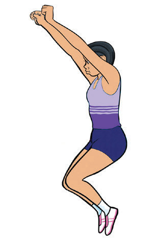
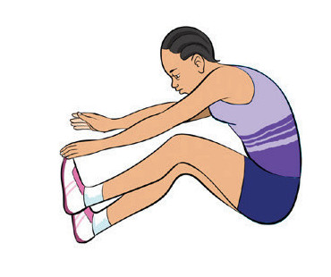
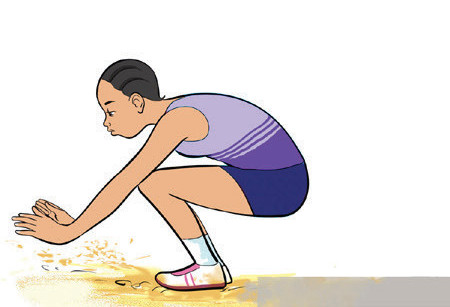

a

b

c
Figure 2.32:Landing in triple jump
Rules and regulations for triple jump
To ensure fairness and safety in triple jump competitions, athletes must follow specific rules and regulations.Some of the rules that guide triple jump events are as follows:
- 1. The triple jump consists of a hop, step, and jump, in that order;
- 2. The hop lands on the same foot as take-off, and the step lands on the opposite foot, followed by the jump into the sandpit;
- 3. Each athlete gets three trials;
- 4. The take-off foot must be on or before the take-off board;
- 5. Markers are allowed beside the runway, but not on it or in the landing area;
- 6. An attempt is invalid if the athlete:
- (a) Steps beyond the take-off line.
- (b) Takes off outside the board’s edges.
- (c) Performs a somersault during the jump.
- (d) Touches the runway or ground outside the landing area before landing.
- (e) Loses control and lands outside the sandpit or too close to the take-off line
- 7. The distance jumped shall be measured from the nearest imprint in the sand to the take-off board;
- 8. If take-off is before the board, measurement shall be taken from the board’s front edge;
- 9. The longest valid jump determines the winner; and
- 10. Ties are broken by the next best jump.